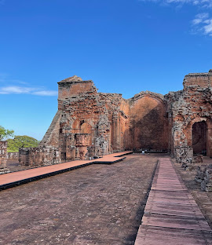
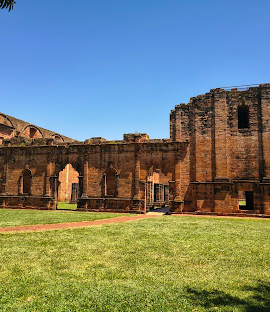
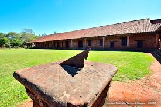
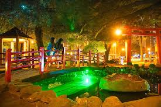
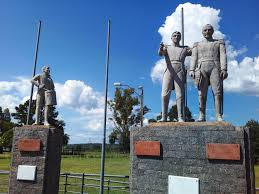

Valoración y preservación del patrimonio histórico y geográfico nacional y departamental
✦
Mapa Patrimonial · Itapúa
Los 5 Sitios Patrimoniales
Selección de lugares de valor histórico, cultural y geográfico del departamento

🏛️
Sitio 01 · Trinidad
Misión Jesuítica de Santísima Trinidad del Paraná
Una de las reducciones jesuíticas más grandes y mejor conservadas de América del Sur. Fundada en el siglo XVII, alberga la iglesia mayor, el colegio jesuítico y talleres artesanales.
🌍 Patrimonio UNESCO

⛪
Sitio 02 · Jesús de Tavarangüé
Misión Jesuítica de Jesús de Tavarangüé
Destacada por su portal de entrada con arcos mixtilíneos únicos en Paraguay. Quedó inconclusa antes de la expulsión de los jesuitas en 1767. A unos 10 km de Trinidad.
🌍 Patrimonio UNESCO

🔭
Sitio 03 · San Cosme y San Damián
Misión Jesuita de San Cosme y San Damián
Conserva el templo histórico en uso activo. Alberga un planetario y el Centro Astronómico que recrea el reloj solar diseñado por los jesuitas, único en Sudamérica.
★ Reloj Solar Jesuita

🏙️
Sitio 04 · Encarnación
Plaza de Armas de Encarnación
Sitio fundacional de la ciudad de Encarnación, instaurado por el santo jesuita Roque González de Santa Cruz. Centro cívico e histórico de la capital departamental de Itapúa.
⛪ Sitio Fundacional

⚔️
Sitio 05 · Carmen del Paraná
Sitio Histórico Batalla de Tacuary
Área protegida en las cercanías del arroyo Tacuary. Escenario de la Batalla del 9 de marzo de 1811, donde las fuerzas paraguayas detuvieron el avance del General Belgrano — hito clave de la independencia paraguaya.